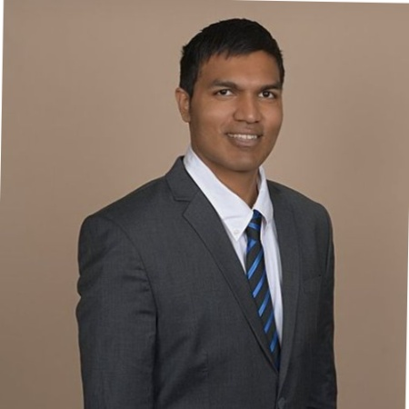

Student Team Members
Vikash Singh
CEO - Founder
Vikash Singh, founder of Project
DataREACH is currently enrolled at UCLA as a Stamps Leadership
Scholar, Regents Scholar, and Gold Shield Alumni Association
Scholar with an intended major in Computational and Systems
Biology and a concentration in Computers and Biosystems.
Matthew K
Software - Machine Learning
Matthew K is a Regents Scholar at UCLA wrapping up his B.S. in Computer Science. As a former Data Science intern at Fuel Cycle, he developed machine learning models to predict conversion rates from surveys and emails, kickstarting his interest in machine learning. As a former Software Developer intern at Hulu, he worked on the frontend for non-subscriber pages. His interests also include running, Rubik's cubes, and Haskell.

Brandon Berookhim
Software - Data Science
Brandon Berookhim is a Los Angeles native in his third year at
UC Berkeley. He is studying Computer Science and Business and is
a Director for the school's hackathon Cal Hacks, in addittion to
being a consultant for TAMID Group's Berkeley Chapter. Berokkhim
hopes to encourage tech literacy and one day found his own
startup company. For now he can be found writing Java code, riding
his bike, playing basketball, and eating burgers.
Raymond Arevalo
Software - UI/UX
Raymond Arevalo is a fourth year at UC San Diego studying Cognitive Science with a specialization in Human Computer Interaction and Computer Science. He is currently interested in designing and developing intuitive user experience and interfaces.
Jianzhi Liu
Data Science - Machine Learning
Jianzhi Liu, a second year student at UCLA, studies Mathematics of Computation. He is interested in fin-tech, deep learning and neural networks. Loving to help his fellow students, he is a mentor at Undergraduate Mathematics Student Association. In addition, Jianzhi is the treasurer for Kappa Sigma Fraternity at UCLA. In his spare time, he likes working out, especially interested in boxing.

Vivek Reddy
Data Science - Machine Learning
Vivek Reddy is a recent graduate from UCLA in a Computational and Systems Biology with a concentration in Biomedical Systems. After completing graduate school, he plans to enter the medical device industry. He is passionate about utilizing data science and machine learning principles to improve healthcare and patient outcomes

Josh Li
Data Science
Haochen (Josh) Li is a freshman at UCLA studying Computer Science. He hopes to apply his knowledge of data structures and statistical analysis in impactful Bio-Data research that improves the lives of others.
Ziming Yang
Data Science
Ziming Yang is a second year student from UCLA, studying Math of Computation and Cognitive Science. He has interests in consulting industry and data science, and how data science can be used to help people gain insight into different things. In his free time, he likes playing basketball, and he is also a brother in the Phi Delta Theta fraternity.

Carter Wu
Software - Data Science
Carter Wu is a third year Computer Science student at UCLA. At UCLA, he is the web chair of both Tau Beta Pi and Upsilon Pi Epsilon. Outside of school, he is currently working as a Data Science Intern at Heal. In his professional work, he loves the beauty and power behind data, and strives to use it to create positive change in the world. In his free time, he loves to experience the amazing food in LA, play tennis, and binge-watch tv shows like Mr. Robot.